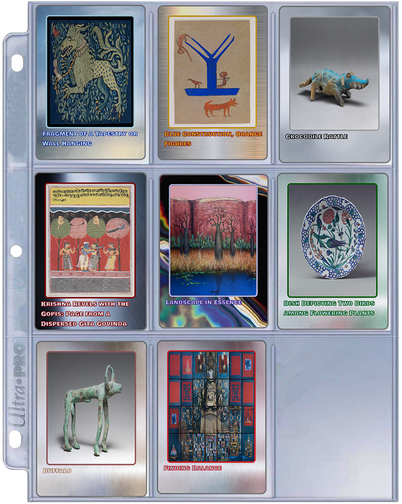
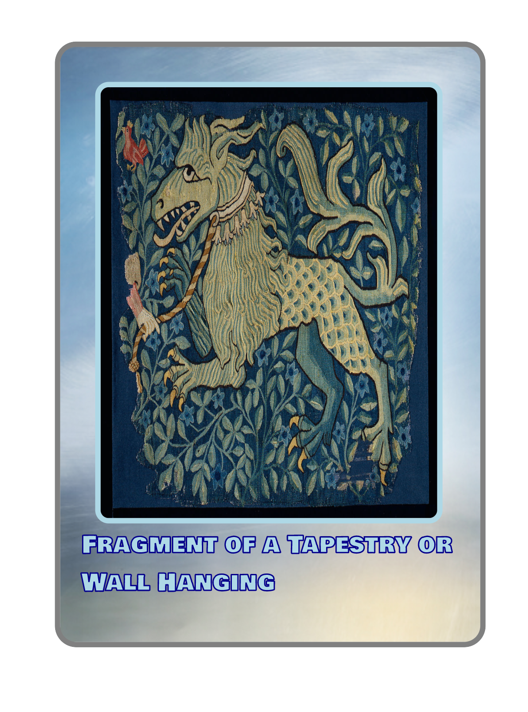
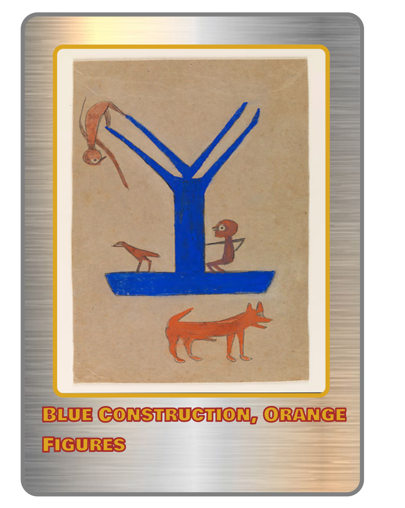
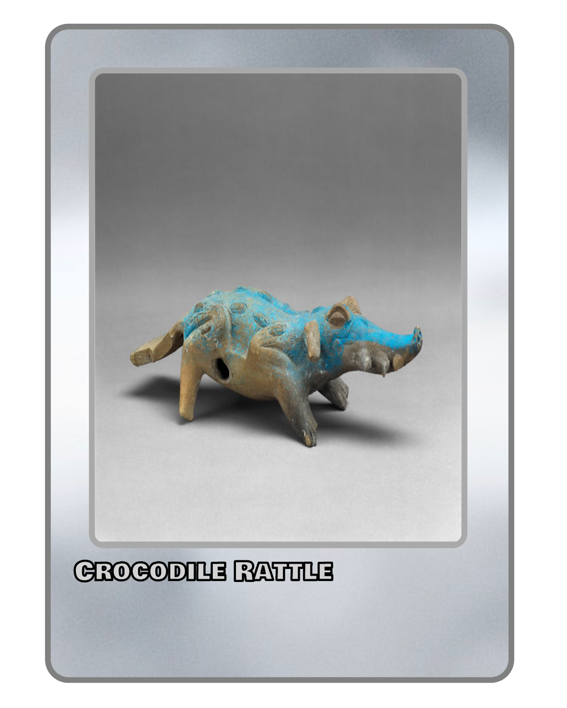
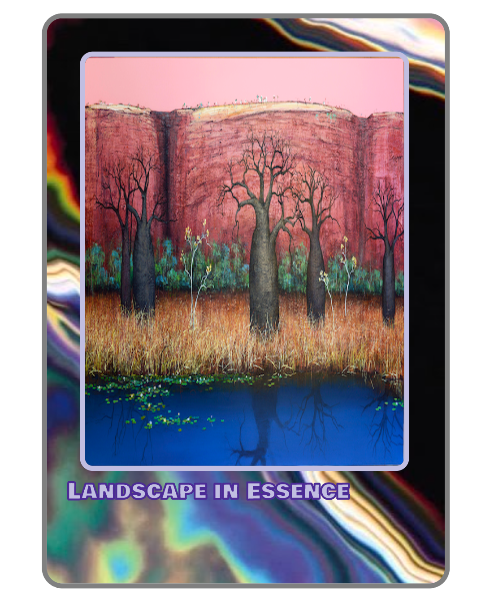
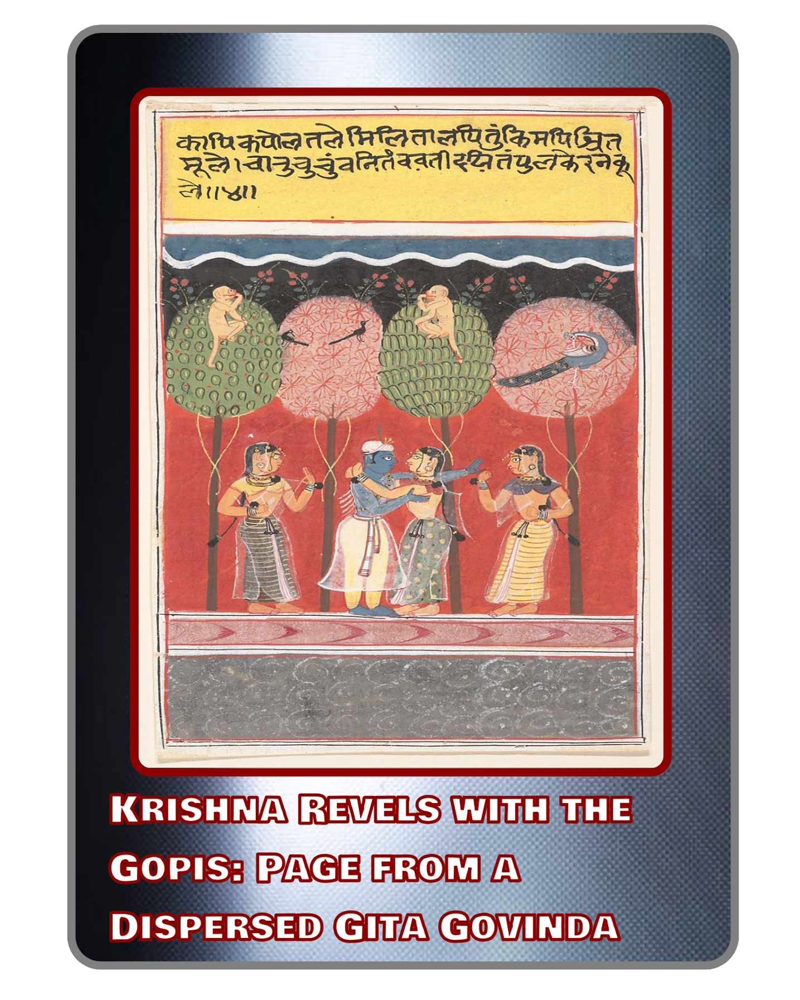
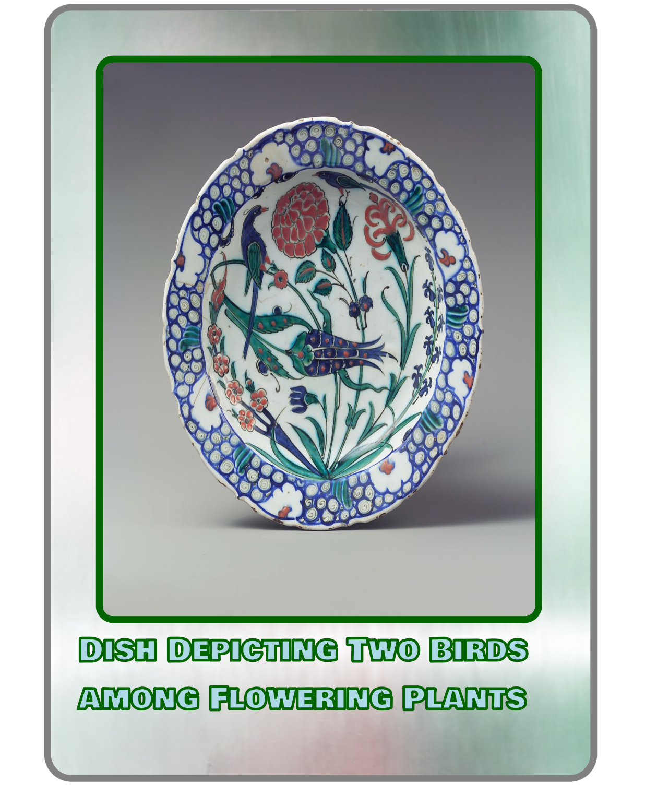
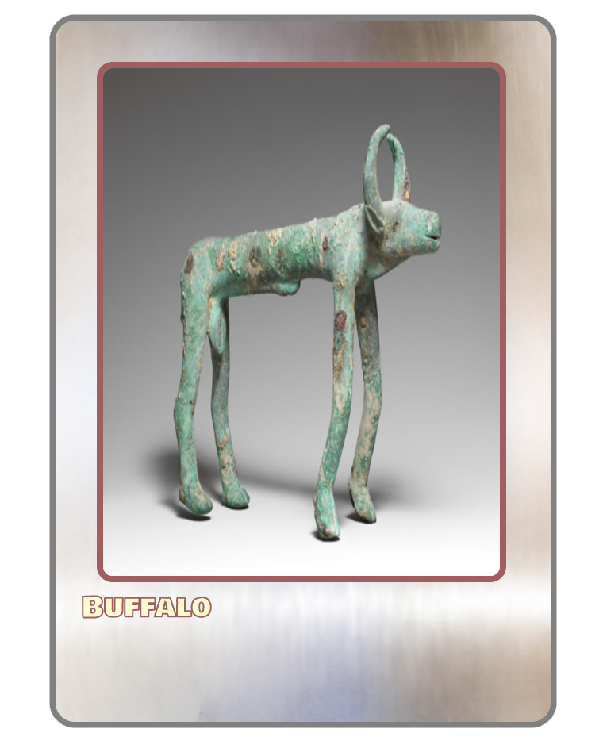
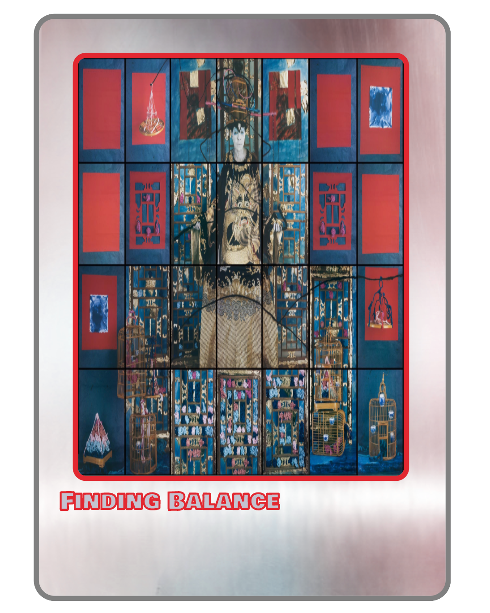

Infinite Blue:
A Card Collection of Blue
Europe
South America
Australia & Oceania
Asia
Middle East
Africa
Caribbean

"The color blue is all around us, but not all blues are made the same. Atomic elements (including those in pigments) and structural colors give plants, animals, and minerals their intense shades of blue. Infinite Blue is a collection that features blue in all its variety—ranging from fine art to song to literature, all of which create a fascinating strand of visual poetry running from ancient times to the present day. In cultures dating back thousands of years, blue—the color of the skies—has often been associated with the spiritual but also signifies power, status, and beauty. The spiritual and material aspects of blue combine to tell us stories about global history, cultural values, technological innovation, and international commerce. "
When given this collection, I noticed that the different objects were much like different "characters," such as one might find in trading cards. I thought of it as a phsycial, tactical collection.
 Europe
 North America
 South America
 Australia & Oceania
 Asia
 Middle East
 Africa
 Caribbean